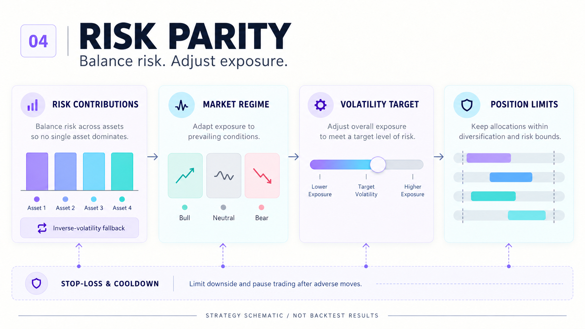

Original strategy retained
Trading calculations and data fields are preserved. Reader-facing source text is translated, and exact originals are archived. Added entry points and presentation files live separately.
Implementation notes →Balance risk. Adjust exposure. Limit positions.

Trading calculations and data fields are preserved. Reader-facing source text is translated, and exact originals are archived. Added entry points and presentation files live separately.
Implementation notes →Synthetic fixtures run locally. Original historical data or some modules are absent.
Data schemas and commands →Each run records parameters, dependency versions, input and source hashes, daily equity, transactions, and a table-only report.
Validation record →